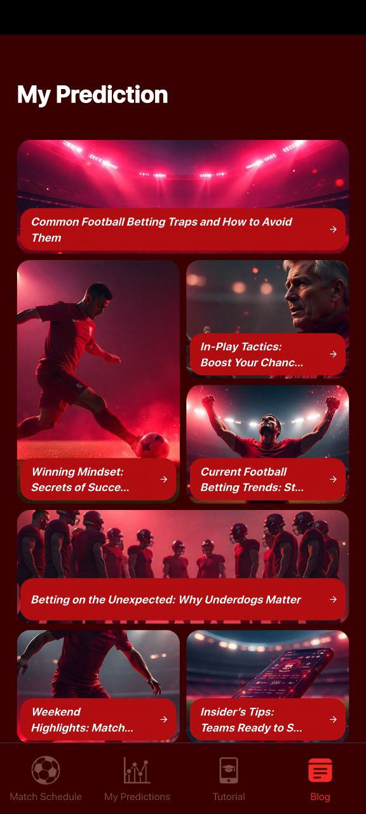
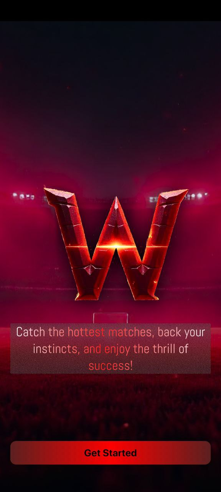
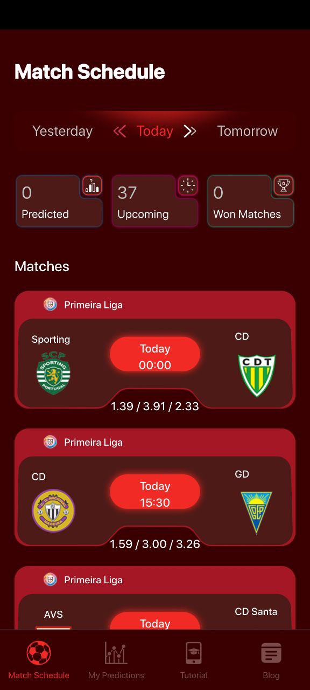
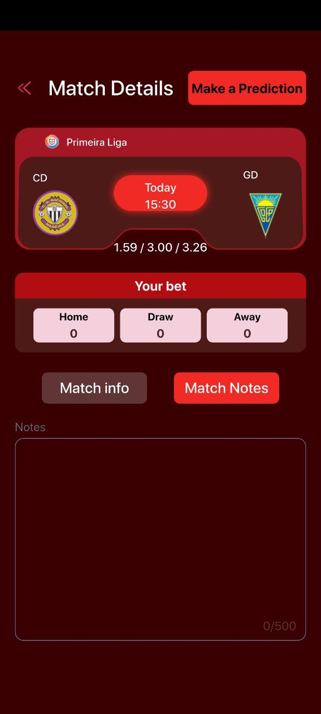
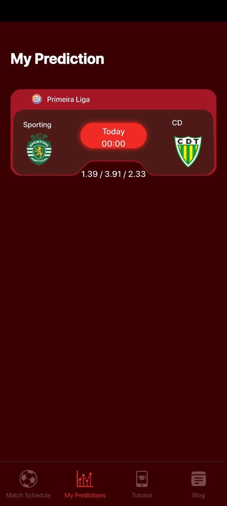
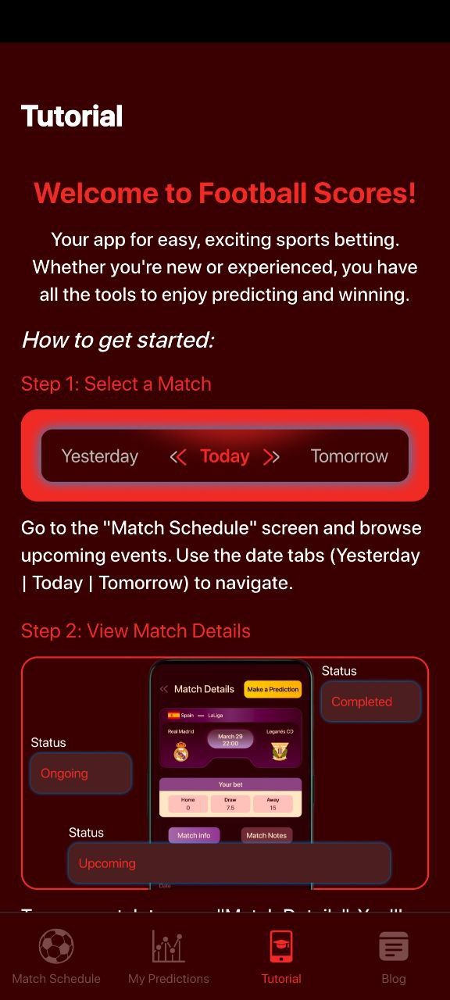
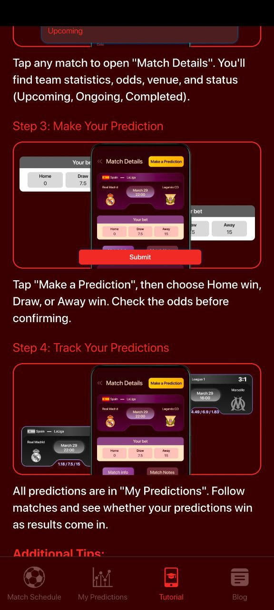

01
Schedule
Quick match discovery without clutter
See upcoming fixtures, prediction counts, and league blocks in a fast, highly scannable interface.
WNMX Hottest Matches helps fans explore fixtures, inspect odds, make predictions, save notes, and stay engaged with match-day content in one sharp mobile experience.

Modern sports UI
Fast. Focused. High energy.Built for
football match prediction flowsThe app moves from schedule discovery to prediction submission with a clean sports-focused flow and strong visual hierarchy.

Browse Yesterday / Today / Tomorrow tabs, scan league cards, and spot odds instantly.
See upcoming fixtures, prediction counts, and league blocks in a fast, highly scannable interface.
Odds, your bet area, and match note space are combined into one focused screen for better context.
The app keeps the prediction step simple and direct so users can react quickly before kickoff.
Tutorial content explains how to browse events, inspect match details, and place predictions confidently.
Blog cards and article pages extend the experience with football insights and seasonal storylines.
Instead of showing screenshots as a random gallery, the landing page presents them as a feature narrative.
The schedule screen makes it easy to scan leagues, compare teams, and quickly identify upcoming matches worth following.
Users can inspect the matchup, see odds, and keep personal notes right where the decision is being made.

The prediction prompt reduces friction and keeps focus on the three key outcomes: Home, Draw, or Away.

The My Prediction section keeps saved picks in view, helping users stay connected to their match-day decisions.

Tutorial and blog content support onboarding while also adding a richer editorial feel to the product.


Sample review blocks for the landing page design section.
“I like how fast the schedule view feels. You can jump into a match, check odds, and make a prediction without getting lost.”
“The UI has strong sports energy. The prediction modal is simple, and the tutorial section makes the app easy to understand.”
“Nice extra touch with the blog and content pages. It feels more like a real sports product than just a basic match list.”
Explore fixtures, check match details, make your prediction, and keep the football momentum going.